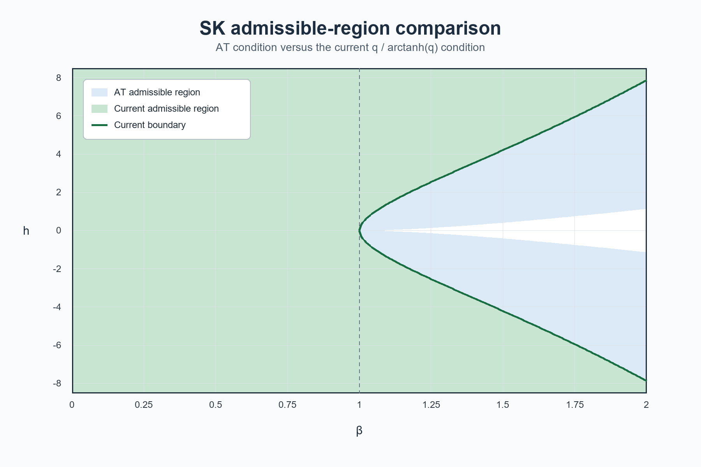

A Lean 4 formalization was developed (with AI assistance) to support the extended replica-symmetry argument for the SK model.
Abstract
In this note, we consider the Sherrington–Kirkpatrick model with deterministic external field. Let $q=q(β,h)$ denote the solution of the replica-symmetric self-consistency equation \[ q=\mathbb E\tanh^2\!\left(h+β\sqrt q\,Z\right), \qquad Z\sim N(0,1), \] where $β$ and $h$ are inverse temperature and external field, respectively. By refining Lata\la' s argument, previously limited to \(β< \frac{1}{2}\), and using the Kearns–Saul inequality, we prove overlap concentration and convergence of the free energy to the replica symmetric formula with error \(O(N^{-1})\) whenever \[ β^2\frac{q}{{\rm arctanh}q}<1. \] Note that for any $β<1$ and $h\in \mathbb R$, the condition above is satisfied. Moreover, for every nonzero $h$, this region contains a nonempty interval with $β>1$.
Problem
For the Sherrington–Kirkpatrick spin-glass model with external field, replica symmetry (convergence of free energy to the replica-symmetric formula) was previously proven only for β<1/2 via Latała's interpolation argument. The goal is to extend this range.
Approach
The authors refine Latała's interpolation (smart-path) argument using Guerra's method and the Kearns–Saul inequality to obtain a sharper endpoint estimate. The condition is stated in terms of ρ(β,h)=β²q/arctanh(q)<1. The extended calculations and a Lean 4 formalization were developed with AI assistance.
Results
Overlap concentration and convergence of the free energy to the replica-symmetric formula with error O(N⁻¹) are proven whenever β²q/arctanh(q)<1. This region contains all β<1 for any h, and for nonzero h includes an interval with β>1.

Figure 1: Comparison of the Almeida–Thouless condition and the condition ( 3 ).